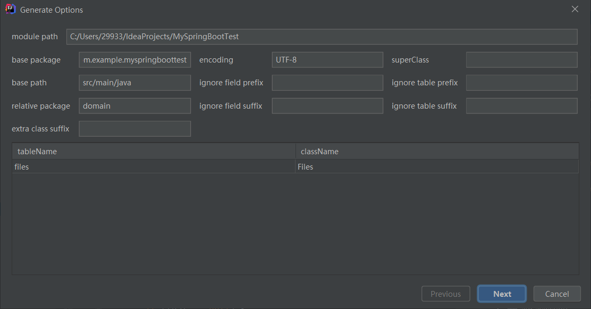
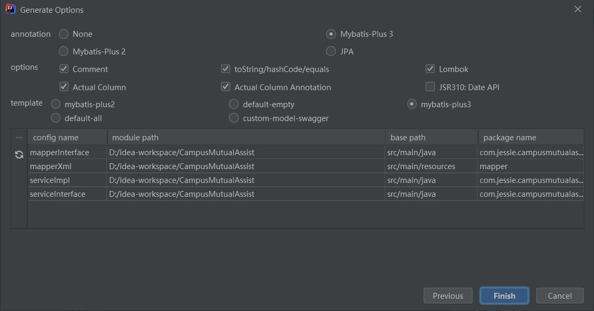

MybatisX插件使用——为快速开发而生
前言：其实很久以前我就非常厌恶写一堆mapper、service、impl之类的重复性工作，一直希望有那么一个工具帮我干这些重复性工作。后面终于发现了这么一个宝藏插件。
以下为官方介绍：
MybatisX 是一款基于 IDEA 的快速开发插件，为效率而生。
虽然这款插件功能比较好用，但是其却是全英文的插件，并且有些选项难以从字面意义上理解，而官方的文档说明不够完善，因此特撰写本文帮助后来者排坑。
需要搭配以下一起食用
SpringBoot
MybatisPlus(也可以不搭配，但是效果就没那么好了)
快速上手
首先在idea中的插件搜索MybatisX下载。
1.生成代码功能
在idea中配置好数据源，右键需要生成代码的表名，点击MybatisX-Generator选项，弹出如下界面。

部分参数说明：
module path：模块路径，此处填写项目所在路径，生成的代码会在相应位置。
basepackage：填写项目的包
encoding：编码，使用UTF-8即可
base path：代码所在路径
relative package：决定实体类会被生成在哪里，默认生成在domain包中，可以修改为其他包但不要为空。
extra class suffix：生成的实体类后面会加上里面的内容。举例：图中如果这里写入Test，最后生成实体类会叫FilesTest
ignore xxx：生成实体类相应字段中忽略指定的前缀/后缀，以下为举例：
- 数据库中有字段名称为type，若ignore field prefix参数设置为ty，则生成实体类中相应的属性名为pe，忽略了ty；
- 数据库名为files，若ignore table prefix设置为为fi，则生成的实体类的名字变为Les，忽略了fi
superClass：生成实体类继承的父类
点击next后，下一步为生成mapper、service等

参数说明：
annotation：生成的代码中是否加上注解（例如，@TableName等注解）。None为没有注解，其他为字面意思。
options各选项经过尝试后，作用大致如下
- comment：可能和生成java doc comments有关，但试了下，好像没有效果。
- toString/hashCode/equals：是否生成相应的方法；建议勾选。
- Lombok：勾选后实体类自动添加Lombok的@Data注解；建议勾选（建议安装Lombok）
- Actual Column：勾选后，生成的实体类属性名和表中字段名大小写会保持一致。例如，表中有字段classID，勾选该选项后生成的属性名也为classID，未勾选则为classid。建议根据实际需要勾选。
- Actual Column Annotation：是否对所有属性名都加上注解标明对应字段，例如@TableName。建议勾选。
- JSR310:Data API：是否使用新标准的时间日期API，包括 Instant、Clock、LocalDateTime、DateTimeFormatter、ZonedDateTime 以及替换 Calendar 的 Chronology 等类。建议勾选（新标准的时间日期API比老版本友好多了，强烈建议使用新版时间日期API）。
template：生成mapper、service等相关代码所使用的模板。template可以修改，默认位于 草稿和控制台——扩展——MybatisX 。对应文件夹内即为相关模板的具体配置文件。如果需要重置，右键template文件夹点击重置默认扩展即可。
如果没有使用MybatisPlus，可以选择default-empty模板。或自定义其他模板。
最底下的表：显示所要生成文件的类型、模块路径、基本路径、生成后位于哪个包。后面三个列都可以修改值以符合项目需要。这些也可以在对应的template的文件夹内的.meta.xml中进行修改。
点击Finish即完成对应代码的生成。
2.xml跳转功能
安装该插件后，对应的mapper和mapperxml图标变成蓝鸟和红鸟。在代码行号的右侧点击相应的蓝鸟和红鸟图标即可快速跳转到对应部分，方便修改。（如果代码使用@Insert等注解而不是在xml中实现SQL代码，则左侧不会显示相应图标）
3.JPA提示（代码自动补全，同时在xml中生成对应的SQL语句）
这点官方文档中的动图演示的非常清晰了，这里就不再赘述。
MybatisX 快速开发插件 | MyBatis-Plus (baomidou.com)
结语
以上就是MybatisX插件的食用方法，希望大家能通过这个插件来有效的提升自己的效率，把时间花在刀刃上，减少一些重复性的工作。